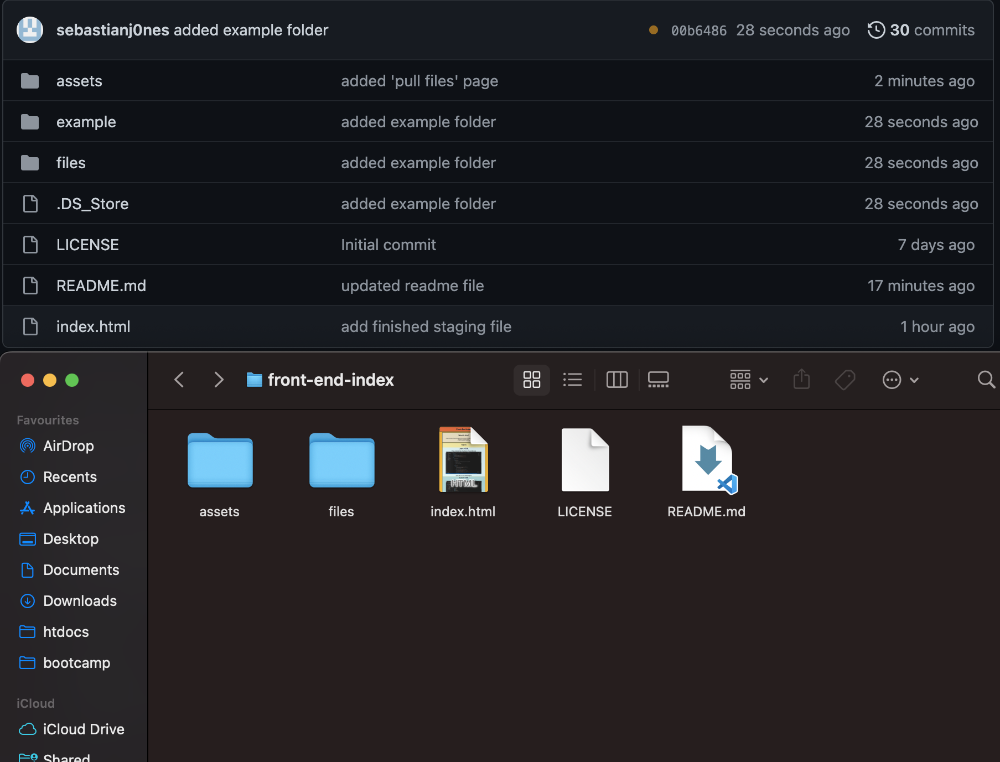
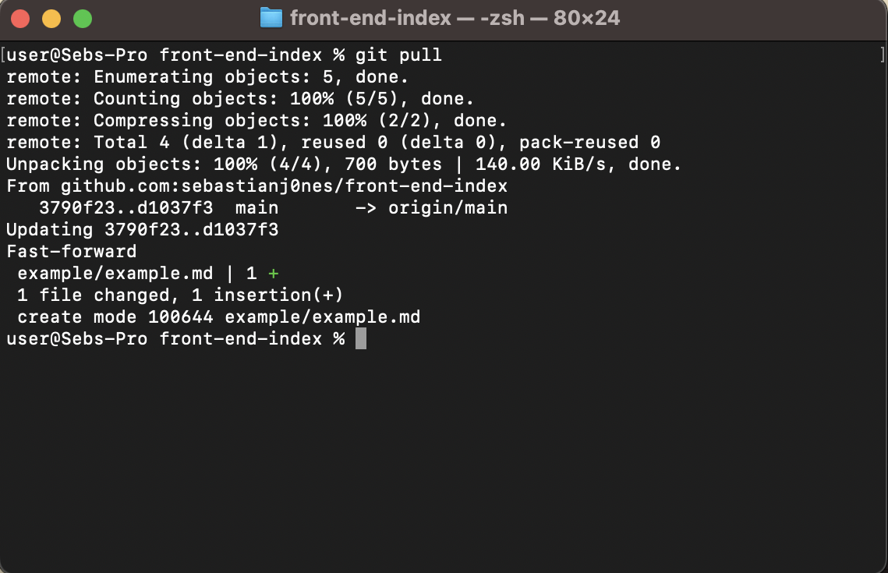
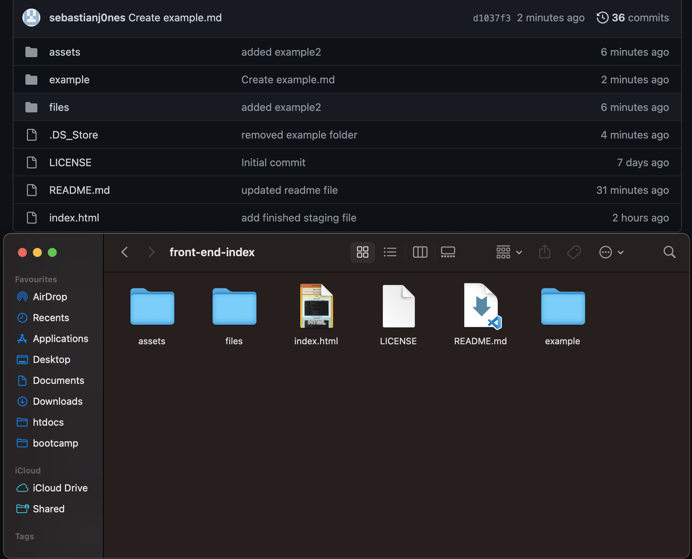

Git
Git
Git is the version control software, allowing savepoints to be made when developing code
Version control is helpful when developing code, especially in a team, to help prevent developers working on outdated code
Pulling Files
Pulling files, is the opposite of pushing files.
When a repository is updated, and the local directory is outdated, we can pull files to keep our directory updated.
For example, in this photo the repository has the "example" folder, but my local directory doesn't.

This means my directory is outdated
By typing "git pull" in Terminal, it will push all files from the repository to my directory.

Now, if we check the local directory, it will contain the same files as the repository.

My local directory is now up to date with the repository.